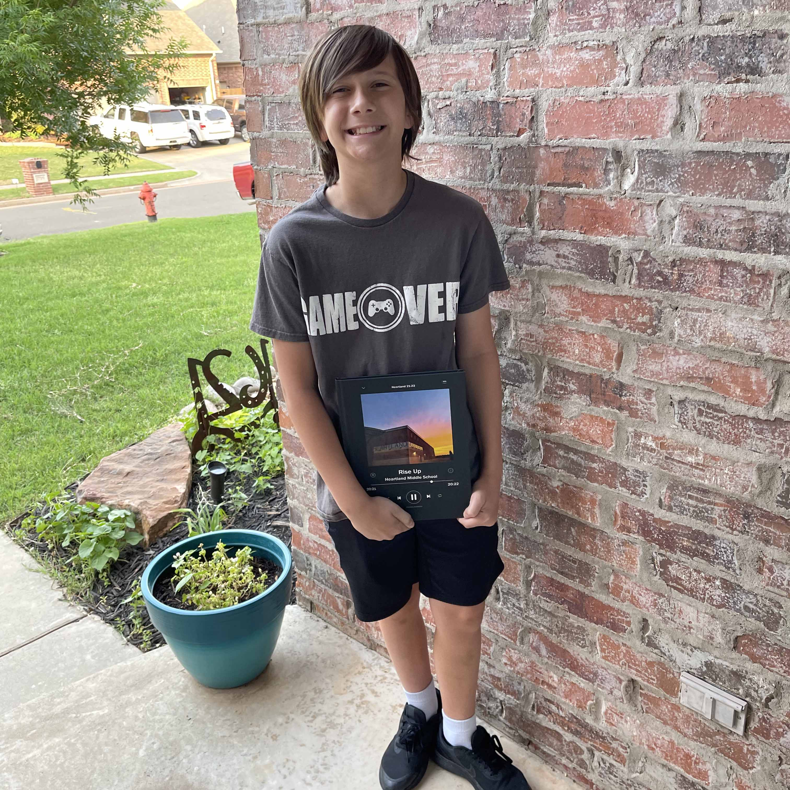

About
Landon Jones is 13 years old and lives in Edmond, OK. He was born in 2009 in Tahlequah, OK, and is a typical boy in almost every way. He loves McDonalds, chocolate milk, playing video games of all kinds, streaming, listening to music, as well as watching many popular shows and YouTube channels.
Landon also enjoys playing trumpet for his school band and last school year placed 4th chair in the whole state at competition against his peers. Landon has a large, loving family and many friends who enjoy many of the same activities that he does. Other interests and activities that Landon enjoys and is very skilled at are chess and solving Rubix cubes of all shapes and sizes very quickly.
At this point in his life, Landon wishes to become a medical doctor when he is an adult and realizes the sacrificing and dedication it will take to complete his goal. He says he wishes to become a doctor because he wishes to help people feel better when they are hurt or sick.